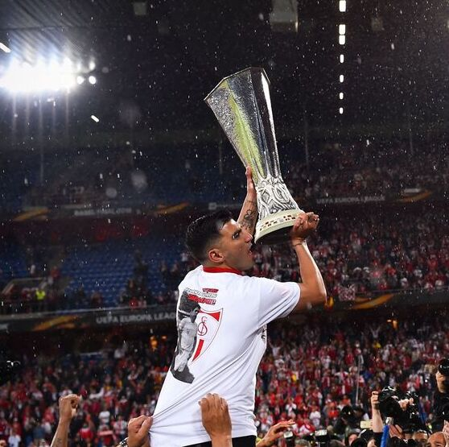
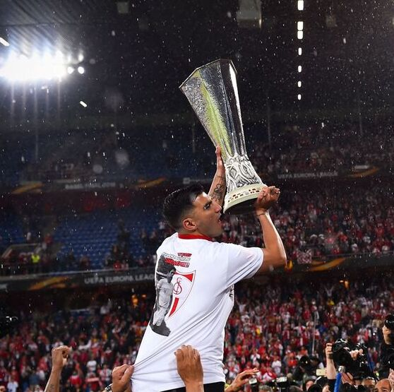

José Antonio Reyes
 

Spanish professional footballer | 1983 - 2019
Clubs
Sevilla, Arsenal, Real Madrid, Atlético Madrid, Benfica, Sevilla, Espanyol, Córdoba, Xinjiang Tianshan Leopard, and Extremadura, respectively.
Spain
Reyes won his first full cap for Spain on 6 September 2003 in a friendly against Portugal. He since played a total of 21 games for Spain and scored four goals.
2019
On 1 June 2019, Reyes died at the age of 35 following a car accident. He had suffered a steering or tyre failure (according to police) which led to his losing control of the car.